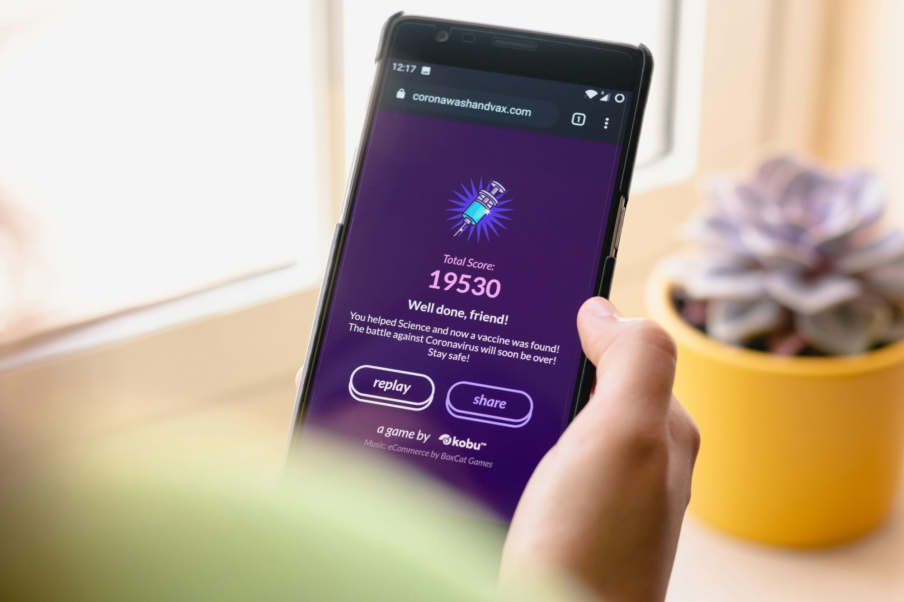

Mejores apps de cashback en 2027 que sí pagan
Rakuten, Ibotta, PayPal Honey, Capital One Shopping y Fetch comparadas: mínimos de pago, cómo paga cada una y los cargos y trampas que conviene conocer.
Z Zar · 25 de noviembre de 2026 · 14 min de lectura

Para la mayoría de los compradores en EE. UU. en 2027, las mejores apps de cashback son Rakuten para compras en línea e Ibotta para el supermercado, con Fetch como complemento para cualquier recibo. Rakuten paga cada tres meses una vez que tienes $5 en Cash Back confirmado, e Ibotta te permite retirar a un banco o a PayPal tras cumplir sus requisitos ($20 mínimo).
Parte de nuestra Budget & Debt Guide (guía de presupuesto y deudas, en inglés)
A continuación comparamos cinco apps según lo que se puede comprobar en los propios términos de cada una: cómo ganas, el mínimo antes de poder cobrar, cómo te pagan y las trampas (cargos por inactividad, puntos que vencen, conflictos de rastreo). Las tasas de cash back cambian según la tienda y la semana, así que este artículo no las cita; revisa la tasa vigente en la app antes de comprar.
Navegación rápida
Nuestras mejores opciones
| Opción | Ideal para | Calificación | |
|---|---|---|---|
| Rakuten | Compras en línea en tiendas grandes | ★★★★★ | Ver opción |
| Ibotta | Cashback en el supermercado | ★★★★★ | Ver opción |
| PayPal Honey | Búsqueda automática de cupones al pagar | ★★★★★ | Ver opción |
| Capital One Shopping | Buscador de cupones, sin necesidad de tarjeta Capital One | ★★★★★ | Ver opción |
| Fetch | Puntos por cualquier recibo de tienda | ★★★★★ | Ver opción |
Última revisión: noviembre de 2026
Mejores apps de cashback para 2027: comparación rápida
| App | Ideal para | Cómo ganas | Mínimo para cobrar | Forma de pago | Ojo con |
|---|---|---|---|---|---|
| Rakuten | Compras en línea | Cash Back en más de 3,500 tiendas a través del sitio, la app o la extensión del navegador | $5 en Cash Back confirmado | PayPal, cheque, Bilt Points o Samsung Cash, cada tres meses | Otras extensiones de cupones o recompensas pueden desactivar su Cash Back |
| Ibotta | Supermercado y artículos de uso diario | Ofertas que agregas antes de comprar; recibo en papel o una cuenta de tienda vinculada | $20 (más una oferta canjeada y una espera de 7 días) | Transferencia bancaria, PayPal o tarjeta de regalo | Se descuentan $3.99 cada 30 días cuando la cuenta lleva 180 días inactiva |
| PayPal Honey | Códigos de cupón automáticos | Buscador de cupones más puntos de PayPal Rewards en tiendas participantes | 1,000 puntos para una tarjeta de regalo (EE. UU.) | Tarjetas de regalo, o puntos usados al pagar con PayPal | Para Rakuten cuenta como extensión competidora |
| Capital One Shopping | Respaldo de cupones | Buscador de cupones más Shopping Rewards en tiendas participantes | $5 en Shopping Rewards | Tarjetas de regalo electrónicas | Las recompensas se pierden si la cuenta se cierra |
| Fetch | Escanear cualquier recibo | Al menos 25 puntos por recibo, más en productos con oferta | 3,000 puntos para la mayoría de las recompensas | Tarjetas de regalo y otras recompensas dentro de la app | Los puntos vencen tras 90 días de inactividad; los recibos deben escanearse en un plazo de 14 días |
Lo esencial desde el principio: empieza con Rakuten e Ibotta. Cubren las compras en línea y el supermercado, y ambas pueden pagarte en efectivo y no solo en tarjetas de regalo (Rakuten por PayPal o cheque, Ibotta por transferencia bancaria o PayPal). Agrega Fetch si quieres recuperar algo con cada recibo. Si te gustan los códigos de cupón automáticos, suma PayPal Honey o Capital One Shopping, pero lee primero la sección sobre cómo combinar: Rakuten indica que las extensiones competidoras pueden desactivar su Cash Back.
Cómo funcionan las apps de cashback
Descarga gratis
Descarga el PDF del FI Checklist de 6 páginas
Una hoja de ruta hacia la independencia financiera en diez pasos. Descarga gratuita. Checklist en inglés, PDF de 6 páginas.
Descargar el PDFSin registro.
Las tiendas y las marcas les pagan a las apps de cashback una comisión o una tarifa de promoción cuando compras a través de ellas. Las apps comparten parte de ese dinero contigo en forma de cash back, puntos o recompensas. Tú pagas el mismo precio en ambos casos; la app solo recibe el crédito si puede rastrear tu compra.
Ese rastreo es la parte que mucha gente pasa por alto. Una extensión del navegador, un enlace de redirección, un recibo escaneado o una cuenta de tienda vinculada son la forma en que cada app comprueba que compraste algo. Si dos apps intentan rastrear la misma compra en línea, normalmente solo una recibe el crédito. Más sobre esto más abajo.
Las 5 mejores apps de cashback para 2027 (análisis)
1. Rakuten: Ideal para compras en línea
Rakuten es un portal de compras con cash back; su página principal anuncia más de 3,500 tiendas.
Cómo funciona: empieza tu compra desde el sitio o la app de Rakuten, o instala la extensión del navegador y activa el Cash Back al llegar a una tienda asociada. Compra como siempre. Cuando la tienda confirma la compra, el Cash Back pasa a tu saldo.
Tasas de cash back: varían según la tienda y cambian con frecuencia, incluso con promociones cortas. Rakuten muestra la tasa vigente en la página de cada tienda; revísala antes de comprar.
Bono de bienvenida: los términos del bono de bienvenida de Rakuten exigen al menos $25 en compras que califiquen dentro de los 90 días posteriores al registro, y las compras en Amazon.com no cuentan. El monto del bono cambia según la promoción vigente cuando te unes, así que revísalo en la página de registro.
Pago: cada tres meses. Rakuten indica fechas de pago el 15 de febrero, el 15 de mayo, el 15 de agosto y el 15 de noviembre, y necesitas $5 o más en Cash Back confirmado para cobrar; un saldo menor se acumula para el siguiente pago. Eliges PayPal, cheque, Bilt Points o Samsung Cash.
Ideal para: quien compra en línea con regularidad en tiendas grandes.
2. Ibotta: Ideal para cashback en el supermercado
Ibotta se especializa en compras de supermercado y de uso diario, en tienda y en línea.
Cómo funciona: agrega ofertas a tu lista en la app antes de comprar, compra los productos y luego sube tu recibo en papel o compra con una cuenta de tienda vinculada. Los recibos de compras en tienda deben ser recibos en papel impresos en la caja y enviarse dentro de los 7 días posteriores a la compra.
Montos de cash back: se fijan por oferta, normalmente una cantidad fija por producto y no un porcentaje, y cambian constantemente. La app muestra el monto en cada oferta.
Cuentas vinculadas: en Walmart puedes vincular tu cuenta de Walmart y ganar automáticamente en tienda y en pedidos de recogida y entrega. Kroger y sus tiendas afiliadas (Ralphs, King Soopers, Fred Meyer y otras) no son elegibles para cash back automático; ahí subes una foto del recibo en papel.
Bono de bienvenida: Ibotta ofrece bonos de bienvenida a los usuarios nuevos, pero el monto y los requisitos cambian con regularidad. La página de Bonuses de la app muestra el vigente.
Cómo cobrar: necesitas al menos $20 en ganancias, al menos una oferta canjeada y una espera de 7 días después de tu primer canje. Entonces puedes retirar a un banco participante, a PayPal o a una tarjeta de regalo; Ibotta indica que los fondos tardan de 0 a 5 días según el método.
Ojo con: los cargos de mantenimiento de cuenta. Si pasas 180 días sin actividad, Ibotta descuenta $3.99 de tu saldo por cada 30 días que la cuenta siga inactiva. Ibotta indica que evitas el cargo si canjeas una oferta, completas una Gaming Offer o recibes crédito por un Referral Bonus al menos una vez cada 180 días.
Ideal para: quienes compran en el supermercado y están dispuestos a agregar ofertas antes de cada compra.
3. PayPal Honey: Ideal para encontrar cupones automáticamente
Honey es, ante todo, un buscador de cupones. Su extensión del navegador busca códigos de cupón al pagar en los sitios compatibles, y en las tiendas participantes también puedes ganar puntos de recompensa. Honey es parte de PayPal, y su centro de ayuda ahora llama a las recompensas puntos de PayPal Rewards (el sitio de Honey todavía usa en algunos lugares el nombre anterior, Honey Gold).
Cómo funciona: instala la extensión, compra como siempre y deja que pruebe códigos al pagar. Donde una tienda ofrece recompensas, actívalas antes de comprar.
Canje: los miembros en EE. UU. necesitan 1,000 puntos para una tarjeta de regalo. Con una cuenta personal de PayPal de EE. UU. vinculada y en regla, también puedes usar los puntos para una compra al pagar con PayPal. Los canjes son definitivos.
Ojo con: para Rakuten es una extensión competidora (consulta la sección sobre cómo combinar).
Ideal para: quienes compran en línea y se olvidan de buscar códigos de cupón.
4. Capital One Shopping: La mejor alternativa a Honey
Capital One Shopping funciona casi igual que Honey: una extensión del navegador que busca códigos de cupón y gana Shopping Rewards en tiendas participantes. Capital One indica que es gratis para todos y que no necesitas ser cliente de Capital One para usarla.
Cómo funciona: instala la extensión, compra y acumula Shopping Rewards en las compras elegibles. Las recompensas se canjean por tarjetas de regalo electrónicas cuando tienes al menos $5.
Conviene saber: según sus términos, los Shopping Rewards sin usar en una cuenta válida no vencen, pero se pierden si la cuenta se cierra, así que canjéalos antes de eliminarla.
Ideal para: un segundo buscador de cupones. Igual que Honey, compite con Rakuten por el rastreo, así que no dejes que ambos acrediten la misma compra.
5. Fetch: Ideal para escanear recibos
Fetch (antes Fetch Rewards) te da puntos por escanear casi cualquier recibo de tienda, no solo de productos específicos.
Cómo funciona: compra en cualquier lugar de EE. UU. o Puerto Rico y luego toma una foto del recibo en la app de Fetch dentro de los 14 días. Cada recibo gana al menos 25 puntos; los recibos con productos de socios, ofertas o eventos de bonos ganan más.
Canje: Fetch indica que la mayoría de las recompensas requieren al menos 3,000 puntos, y las recompensas son sobre todo tarjetas de regalo digitales.
Ojo con: si tu cuenta está inactiva durante 90 días consecutivos, tus puntos vencen. Escanear un solo recibo la mantiene activa. También hay un límite de 35 recibos en 8 días.
Ideal para: quienes quieren recuperar algo en cada compra del supermercado sin planificar en torno a las ofertas.
Cómo combinar cashback para obtener el máximo
Combinar significa ganar por más de una capa en la misma compra. Las capas que se combinan sin problema son tipos distintos de recompensa: un portal de compras, las recompensas de tu tarjeta de crédito y el programa de lealtad de la propia tienda. Lo que no se combina bien son dos extensiones de cash back en un mismo pedido en línea.
Rakuten indica que hacer clic en un enlace de otro sitio de cupones o recompensas después de activar su extensión desactiva el Cash Back de Rakuten, y recomienda desactivar o desinstalar las extensiones competidoras. PayPal Honey y Capital One Shopping son justamente ese tipo de extensión. Por eso, en cada pedido en línea, decide cuál se lleva el crédito.
Ejemplo hipotético en línea (las tasas son inventadas para mostrar la cuenta; revisa la tasa vigente en la app):
- Cash Back de Rakuten: si la página de la tienda muestra 5%, un pedido de $150 gana $7.50
- Recompensas de la tarjeta de crédito: una tarjeta que gana 2% suma $3.00
- Código de cupón: cualquier descuento se resta del precio, pero Rakuten advierte que los códigos de otros sitios de cupones o recompensas pueden desactivar su rastreo
- Total en este ejemplo: $10.50 de vuelta sobre $150, antes de cualquier cupón
Combina el portal con una tarjeta de crédito con recompensas para la capa de la tarjeta.
Combinación para el supermercado:
- Ibotta: agrega ofertas antes de comprar y luego sube el recibo en papel (o usa una cuenta vinculada donde esté disponible)
- Programa de lealtad de la tienda: los puntos o cupones digitales de la propia tienda
- Tarjeta de crédito: las recompensas de tu tarjeta en el cargo del supermercado
- Fetch: escanea el mismo recibo para ganar puntos dentro de 14 días
Cuánto suma todo esto depende por completo de lo que compres y de qué ofertas estén vigentes, así que toma como una simple suposición cualquier cifra mensual que veas en internet, incluso en versiones anteriores de este artículo. Si quieres un sistema más amplio para automatizar tus ahorros, consulta las mejores apps para ahorrar dinero automáticamente (en inglés).
Preguntas frecuentes
¿Cuál es la mejor app de cashback en 2027?
Rakuten es el mejor punto de partida para las compras en línea: más de 3,500 tiendas, y paga en efectivo por PayPal o cheque cada tres meses una vez que tienes $5 en Cash Back confirmado. Para el supermercado, Ibotta es la mejor opción. A la mayoría de las personas les conviene usar ambas.
¿Valen la pena las apps de cashback?
Sí, con dos advertencias. Primero, nunca cambies lo que compras solo para ganar cash back; las apps solo ahorran dinero en compras que ya ibas a hacer. Segundo, revisa cómo paga cada app: Rakuten e Ibotta pueden pagar en efectivo, mientras que PayPal Honey, Capital One Shopping y Fetch pagan sobre todo en tarjetas de regalo o puntos. Fíjate también en la letra pequeña: Ibotta descuenta $3.99 cada 30 días del saldo de una cuenta inactiva durante 180 días, y los puntos de Fetch vencen tras 90 días de inactividad.
¿Qué app de cashback paga más?
No hay una respuesta fija, porque las tasas cambian según la tienda y la semana. Para las compras en línea, compara la tasa vigente en la página de la tienda en Rakuten antes de comprar. En el supermercado, Ibotta paga por producto, así que lo que ganas depende de comprar los productos en oferta. Fetch paga algo por casi todos los recibos, desde 25 puntos.
¿Puedo usar varias apps de cashback al mismo tiempo?
Sí, siempre que rastreen las compras de formas distintas. Ibotta y Fetch funcionan con recibos, así que pueden convivir, y una tarjeta de crédito con recompensas funciona con cualquiera de ellas. En los pedidos en línea, usa una sola extensión de cash back por compra: Rakuten indica que las extensiones competidoras de cupones o recompensas pueden desactivar su Cash Back, así que no dejes que Honey o Capital One Shopping se activen en un pedido que empezaste desde Rakuten.
¿Son seguras las apps de cashback?
Las apps de esta lista son empresas establecidas. Ibotta cotiza en la Bolsa de Valores de Nueva York con el símbolo IBTA desde abril de 2024, y Honey es parte de PayPal. El principal intercambio en privacidad: estas apps ven tus compras (recibos, cuentas de tienda vinculadas o tu navegación en tiendas asociadas) para verificar el cash back. Lee la política de privacidad de cada app si esto te preocupa.
¿Cuánto tarda el pago?
Depende de la app. Rakuten paga el 15 de febrero, el 15 de mayo, el 15 de agosto y el 15 de noviembre, por el Cash Back que la tienda ya confirmó. Ibotta indica que los retiros tardan de 0 a 5 días una vez que cumples el umbral de $20 y los demás requisitos. PayPal Honey, Capital One Shopping y Fetch te permiten canjear en la app cuando alcanzas sus mínimos (1,000 puntos, $5 en recompensas y 3,000 puntos, respectivamente).
Rakuten vs. PayPal Honey: ¿cómo se comparan?
Rakuten y PayPal Honey son los dos nombres más buscados, y resuelven problemas distintos:
- Función principal: Rakuten es un portal de cash back en más de 3,500 tiendas. Honey es un buscador de cupones que también ofrece puntos de recompensa en tiendas participantes.
- Bono de registro: Rakuten tiene un bono de bienvenida que requiere $25 en compras que califiquen dentro de 90 días; el monto varía según la promoción.
- Motor de cupones: Honey busca y prueba códigos de cupón al pagar. Rakuten ofrece cupones junto con el Cash Back en las páginas de sus tiendas.
- Pago: Rakuten paga cada tres meses por PayPal, cheque, Bilt Points o Samsung Cash. Honey paga en puntos de PayPal Rewards, canjeables por tarjetas de regalo (mínimo de 1,000 puntos en EE. UU.) o al pagar con PayPal.
- Ideal para: Rakuten para quienes compran mucho en línea; Honey para ahorrar con cupones de forma pasiva.
¿Se pueden usar las dos? Puedes instalar ambas, pero no dejes que las dos actúen sobre el mismo pedido. Rakuten indica que otro sitio o extensión de cupones o recompensas puede desactivar su Cash Back. Si un pedido tiene una tasa alta en Rakuten, empieza desde Rakuten y omite las recompensas de Honey en ese pago.
Para la parte de la tarjeta de crédito, consulta nuestra guía completa para maximizar las recompensas de las tarjetas de crédito (en inglés).
Conclusión
Las apps de cashback no te hacen rico. Sí te devuelven dinero en compras que ya ibas a hacer, siempre que estés atento a los mínimos y a la letra pequeña.
Empieza con Rakuten e Ibotta: ambas son gratis, ambas pueden pagar en efectivo y juntas cubren la mayor parte del gasto en línea y en el supermercado. Agrega Fetch para cada recibo. Usa una extensión de cupones si quieres, pero un solo rastreador de cash back por pedido en línea.
Para ver el panorama completo sobre cómo crear hábitos de ahorro más allá de las apps de cashback, la guía de presupuesto (en inglés) es el siguiente paso lógico.
¿Quieres profundizar? Consulta las cuentas de cheques sin comisiones (en inglés).
Ganar cashback importa menos si tu banco te lo quita en comisiones. Calcula cuánto te cuesta realmente tu banco con nuestra calculadora gratuita (en inglés).
Descarga gratis: el checklist de independencia financiera en 10 pasos
La hoja de ruta exacta que seguí para construir mi base financiera. Checklist en inglés, PDF de 6 páginas, gratis y sin registro.
Las apps de cashback se suman a la tarjeta que uses, así que conviene comprobar que la tarjeta de base sea la adecuada: consulta cómo usar la IA para comparar tarjetas de crédito (en inglés).
Descargar el checklist gratis (en inglés)
Fuentes
- Rakuten: página principal (más de 3,500 tiendas)
- Rakuten: ¿Cuándo me pagan?
- Rakuten: Términos del bono de bienvenida
- Rakuten: ¿Puedo usar la extensión con otros sitios de cupones o recompensas?
- Ibotta: Formas de retirar tus ganancias
- Ibotta: Cargos de mantenimiento de cuenta
- Ibotta: Requisitos de los recibos para ofertas en tienda
- Ibotta: Cash back en tiendas Kroger
- Ibotta: Cómo vincular tu cuenta de Walmart
- Ibotta: ¿Qué es un Welcome bonus?
- Ibotta: Precio de la oferta pública inicial (NYSE: IBTA)
- PayPal Honey: Cómo canjear PayPal Rewards
- PayPal Honey: Preguntas frecuentes
- Capital One: Qué es Capital One Shopping y cómo funciona
- Capital One Shopping: Términos de servicio
- Fetch: ¿Cuántos puntos ganan los recibos?
- Fetch: ¿Por qué no se aceptó mi recibo?
- Fetch: ¿Vencen los puntos de Fetch?
- Fetch: Preguntas frecuentes
Última verificación: 24 de noviembre de 2026.